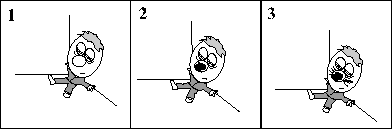

Hur man tillverkar en varkorre*
Ett garanterat uppskattat partytrick, som med fördel används då festen börjar bli
tråkig och alla ens kompisar däckat bort...
Material:
- 1 st. däckad person
- 1 st. spritpenna (kan ev. ersättas med eltejp)

| Finn en däckad person
| Rita dit nosen
| Fyll på med morrhår
|
Klart!!
* Varkorre är en blandning mellan varulv och ekorre